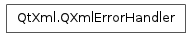

QXmlErrorHandler ¶

Detailed Description ¶
The PySide.QtXml.QXmlErrorHandler class provides an interface to report errors in XML data.
If you want your application to report errors to the user or to perform customized error handling, you should subclass this class.
You can set the error handler with QXmlReader.setErrorHandler() .
Errors can be reported using PySide.QtXml.QXmlErrorHandler.warning() , PySide.QtXml.QXmlErrorHandler.error() and PySide.QtXml.QXmlErrorHandler.fatalError() , with the error text being reported with PySide.QtXml.QXmlErrorHandler.errorString() .
- class PySide.QtXml. QXmlErrorHandler ¶
- PySide.QtXml.QXmlErrorHandler. error ( exception ) ¶
-
Parameters: exception – PySide.QtXml.QXmlParseException Return type: PySide.QtCore.bool A reader might use this function to report a recoverable error. A recoverable error corresponds to the definiton of “error” in section 1.2 of the XML 1.0 specification. Details of the error are stored in exception .
The reader must continue to provide normal parsing events after invoking this function.
If this function returns false the reader stops parsing and reports an error. The reader uses the function PySide.QtXml.QXmlErrorHandler.errorString() to get the error message.
- PySide.QtXml.QXmlErrorHandler. errorString ( ) ¶
-
Return type: unicode The reader calls this function to get an error string if any of the handler functions returns false.
- PySide.QtXml.QXmlErrorHandler. fatalError ( exception ) ¶
-
Parameters: exception – PySide.QtXml.QXmlParseException Return type: PySide.QtCore.bool A reader must use this function to report a non-recoverable error. Details of the error are stored in exception .
If this function returns true the reader might try to go on parsing and reporting further errors, but no regular parsing events are reported.
- PySide.QtXml.QXmlErrorHandler. warning ( exception ) ¶
-
Parameters: exception – PySide.QtXml.QXmlParseException Return type: PySide.QtCore.bool A reader might use this function to report a warning. Warnings are conditions that are not errors or fatal errors as defined by the XML 1.0 specification. Details of the warning are stored in exception .
If this function returns false the reader stops parsing and reports an error. The reader uses the function PySide.QtXml.QXmlErrorHandler.errorString() to get the error message.